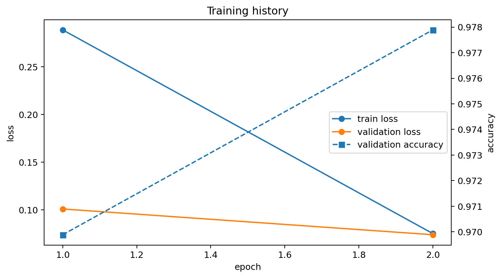
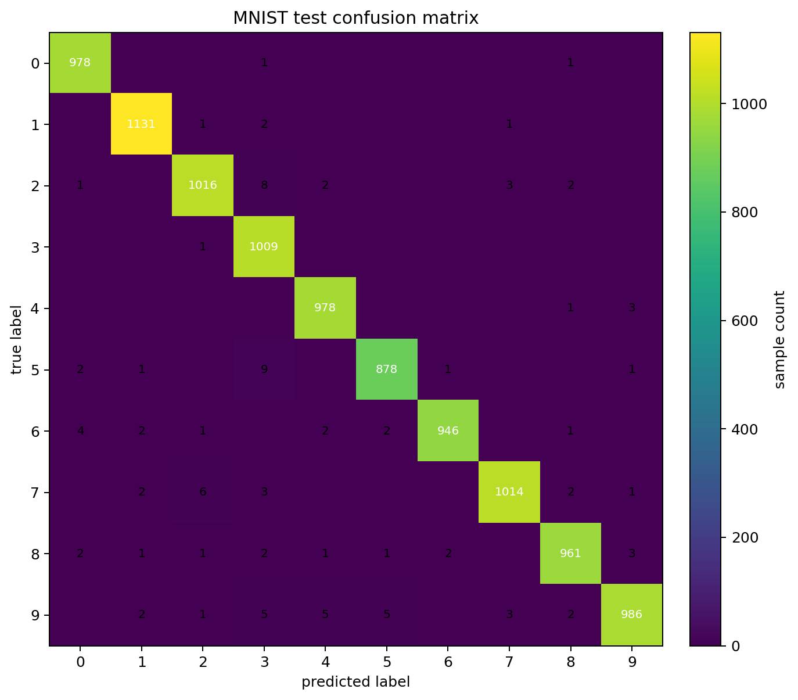
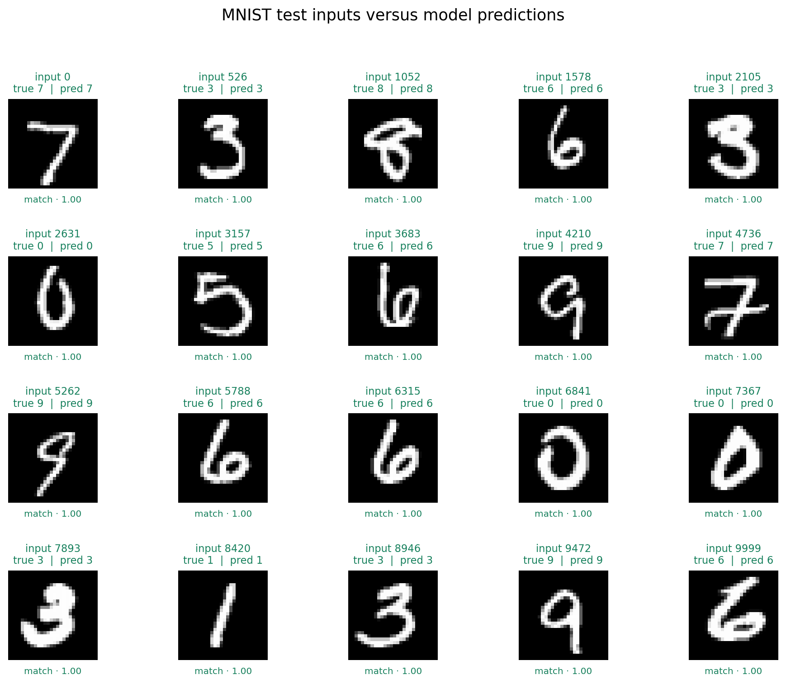

KYDW 本科生科研入门体验项目
实践参考答案 00：基础编程与人工智能
以下内容保留实践 Notebook 的单元格顺序，原来需要补全的位置已经填入一种参考写法，并在 Markdown 单元格中说明输入、处理和输出。
参考答案仅做参考；运行时请结合自己的图像、指标和结果文件阅读。
Markdown 单元格01
实践项目 00：MNIST 手写数字分类
这份 Notebook 用手写数字图片完成一次完整的分类练习：先读取输入和标签，再检查数据，计算归一化参数，补全小型卷积神经网络，训练模型，评价测试集，最后观察输入加入噪声后结果怎样变化。
Kaggle Notebook 是本项目的首选实践入口。打开公开 Notebook 后，点击“复制并编辑”保存到自己的账户，再按顺序运行单元格；下载到电脑运行是补充方式。每个任务都会说明输入、处理、输出和参考实现。
图片和 JSON 用于帮助自己检查代码和记录结果。
本页参考实现： 带有 参考实现、None 占位或“参考记录”的区域。只使用当前单元格提供的数据，不把参考结果数字直接写进代码。完成一个任务后，先运行当前单元格和后面的检查单元格。
任务总览
- 读取图像和标签，核对 shape、数据类型、像素范围和类别分布。
- 只用训练子集计算均值和标准差，并让三个数据集使用同一组参数。
- 补全 CNN 的第二个卷积块和分类层。
- 按“清空梯度 → 前向传播 → 损失 → 反向传播 → 更新参数”的顺序训练。
- 用独立测试集计算准确率、每类 F1 和混淆矩阵。
- 给测试图像加入高斯噪声，比较清洁输入和扰动输入。
- 只改变学习率，完成一次单变量对照。
需要保存的结果
task0_data_visualization.pngtask0_training_curve.pngtask0_confusion_matrix.pngtask0_result.json
Markdown 单元格02
实践顺序
每个任务都沿着“输入 → 处理 → 输出”的顺序进行。前一个任务产生的变量会成为后一个任务的输入，所以不要跳过中间的检查结果。
- 读取 MNIST，得到图像张量和数字标签。
- 检查图像 shape、dtype、像素范围和 0–9 标签数量。
- 用训练子集统计量归一化，并划分训练集、验证集和测试集。
- 让 CNN 把
[1, 28, 28] 图像变成 10 个类别分数。
- 训练模型，用验证集选择模型，再用测试集做最终评价。
- 加入噪声，观察输入受到干扰时准确率的变化。
- 只改学习率，记录一次可解释的比较。
每个代码单元格运行后先读懂输出，再继续下一步。
代码单元格03
# 0. 导入库与固定随机性
# 输入：无；输出：后续步骤使用的库、随机种子、计算设备和工作目录。
from pathlib import Path # 导入当前步骤需要的工具
import json, random, time, warnings # 导入当前步骤需要的工具
import numpy as np # 导入当前步骤需要的工具
import pandas as pd # 导入当前步骤需要的工具
import matplotlib.pyplot as plt # 导入当前步骤需要的工具
import torch # 导入当前步骤需要的工具
import torch.nn as nn # 导入当前步骤需要的工具
from torch.utils.data import DataLoader, TensorDataset, random_split # 导入当前步骤需要的工具
from torchvision import datasets, transforms # 导入当前步骤需要的工具
from sklearn.metrics import accuracy_score, f1_score, confusion_matrix, classification_report # 导入当前步骤需要的工具
SEED = 42 # 固定随机状态以便复现实验
random.seed(SEED) # 固定随机状态以便复现实验
np.random.seed(SEED) # 固定随机状态以便复现实验
torch.manual_seed(SEED) # 固定随机状态以便复现实验
if torch.cuda.is_available(): # 根据当前条件选择处理分支
torch.cuda.manual_seed_all(SEED) # 固定随机状态以便复现实验
device = torch.device('cuda' if torch.cuda.is_available() else 'cpu') # 保存当前步骤使用的中间结果
WORKDIR = Path('/kaggle/working') if Path('/kaggle/working').exists() else Path.cwd() # 保存当前步骤使用的中间结果
print('device =', device) # 显示便于检查的关键信息
print('working directory =', WORKDIR) # 显示便于检查的关键信息
Markdown 单元格04
1. 读取数据
输入： Kaggle 中的 Digit Recognizer train.csv、torchvision 可以下载的 MNIST，或用于本地结构检查的小型回退数据。
处理： load_digit_data() 把每张图片整理为 [1, 28, 28] 的浮点张量，把标签整理为整数，并返回训练数据、测试数据和数据集名称。
输出： train_full、test_dataset 和 dataset_name。如果显示 sklearn digits fallback，只能说明 Notebook 结构可以检查；正式实践要在 Kaggle 中确认数据名称为 MNIST。
代码单元格05
def load_digit_data(): # 定义可重复调用的计算步骤
"""返回 train_dataset, test_dataset, dataset_name。图像范围统一为 [0, 1]，形状为 [1, 28, 28]。""" # 执行当前计算步骤
# 输入：可能存在的 CSV；输出：train_dataset、test_dataset、dataset_name。
# Kaggle Digit Recognizer 常见路径
csv_candidates = list(Path('/kaggle/input').glob('**/train.csv')) if Path('/kaggle/input').exists() else [] # 读取本任务需要的数据
for csv_path in csv_candidates: # 逐批或逐样本执行当前步骤
try: # 执行当前步骤并保留结果
df = pd.read_csv(csv_path) # 读取本任务需要的数据
pixel_cols = [c for c in df.columns if str(c).startswith('pixel')] # 保存当前步骤使用的中间结果
if 'label' in df.columns and len(pixel_cols) == 784: # 根据当前条件选择处理分支
x = torch.tensor(df[pixel_cols].to_numpy(), dtype=torch.float32).reshape(-1, 1, 28, 28) / 255.0 # 整理模型需要的数据格式
y = torch.tensor(df['label'].to_numpy(), dtype=torch.long) # 整理模型需要的数据格式
g = torch.Generator().manual_seed(SEED) # 固定随机状态以便复现实验
n_test = max(1000, int(0.15 * len(x))) # 保存当前步骤使用的中间结果
perm = torch.randperm(len(x), generator=g) # 保存当前步骤使用的中间结果
test_idx, train_idx = perm[:n_test], perm[n_test:] # 保存当前步骤使用的中间结果
return TensorDataset(x[train_idx], y[train_idx]), TensorDataset(x[test_idx], y[test_idx]), 'MNIST / Kaggle Digit Recognizer' # 返回当前步骤的计算结果
except Exception: # 处理另一种情况或异常
continue # 继续尝试其他数据来源
# 标准 torchvision MNIST
try: # 执行当前步骤并保留结果
tfm = transforms.ToTensor() # 整理模型需要的数据格式
root = WORKDIR / 'mnist_data' # 保存当前步骤使用的中间结果
train_ds = datasets.MNIST(root=root, train=True, transform=tfm, download=True) # 建立互相隔离的数据划分
test_ds = datasets.MNIST(root=root, train=False, transform=tfm, download=True) # 建立互相隔离的数据划分
return train_ds, test_ds, 'MNIST / torchvision' # 返回当前步骤的计算结果
except Exception as exc: # 处理另一种情况或异常
warnings.warn(f'MNIST 暂时无法读取，使用 sklearn digits 完成本地结构检查：{exc}') # 执行当前计算步骤
# 本地回退，仅用于检查 Notebook 结构
from sklearn.datasets import load_digits # 导入当前步骤需要的工具
from sklearn.model_selection import train_test_split # 导入当前步骤需要的工具
import torch.nn.functional as F # 导入当前步骤需要的工具
d = load_digits() # 保存当前步骤使用的中间结果
x = torch.tensor(d.images, dtype=torch.float32).unsqueeze(1) / 16.0 # 整理模型需要的数据格式
x = F.interpolate(x, size=(28, 28), mode='bilinear', align_corners=False) # 保存当前步骤使用的中间结果
y = torch.tensor(d.target, dtype=torch.long) # 整理模型需要的数据格式
idx = np.arange(len(y)) # 保存当前步骤使用的中间结果
tr, te = train_test_split(idx, test_size=0.2, random_state=SEED, stratify=y.numpy()) # 固定随机状态以便复现实验
return TensorDataset(x[tr], y[tr]), TensorDataset(x[te], y[te]), 'sklearn digits fallback（仅环境检查）' # 返回当前步骤的计算结果
train_full, test_dataset, dataset_name = load_digit_data() # 保存当前步骤使用的中间结果
print(dataset_name) # 显示便于检查的关键信息
print('train_full =', len(train_full), 'test =', len(test_dataset)) # 显示便于检查的关键信息
Markdown 单元格06
任务 1：数据检查与真实样本可视化
这一步先看清楚模型将要接收的输入。train_full[0] 给出一张图像和它的数字标签；[1, 28, 28] 中，1 是灰度通道，两个 28 分别是高度和宽度。
本单元格说明： 下一个代码单元格中的训练样本数、单张图像 shape、dtype、像素最小值、像素最大值和 0–9 类别计数。class_counts 应是长度为 10 的一维计数张量。
输入与输出： 输入是 train_full、sample_image 和 all_labels；输出是统计量、真实手写数字样本图和类别分布图。统计量必须来自当前数据。
检查： 运行后底部的 shape、像素范围和类别数量断言应通过，并应显示真实样本。
代码单元格07
# 参考实现：完成数据检查
sample_image, sample_label = train_full[0] # 保存当前步骤使用的中间结果
sample_count = len(train_full) # 参考实现：训练数据样本数
image_shape = tuple(sample_image.shape) # 参考实现：单张图像 shape
image_dtype = str(sample_image.dtype) # 参考实现：数据类型
pixel_min = float(sample_image.min()) # 参考实现：像素最小值，转成 Python float
pixel_max = float(sample_image.max()) # 参考实现：像素最大值，转成 Python float
all_labels = torch.tensor([int(train_full[i][1]) for i in range(len(train_full))]) # 整理模型需要的数据格式
class_counts = torch.bincount(all_labels, minlength=10) # 参考实现：长度为 10 的类别计数张量
print('sample_count =', sample_count) # 显示便于检查的关键信息
print('image_shape =', image_shape) # 显示便于检查的关键信息
print('image_dtype =', image_dtype) # 显示便于检查的关键信息
print('pixel range =', pixel_min, pixel_max) # 显示便于检查的关键信息
print('label range =', int(all_labels.min()), int(all_labels.max())) # 显示便于检查的关键信息
print('class_counts =', class_counts) # 显示便于检查的关键信息
assert sample_count == len(train_full) # 保存当前步骤使用的中间结果
assert tuple(image_shape) == (1, 28, 28) # 保存当前步骤使用的中间结果
assert pixel_min >= 0 and pixel_max <= 1 # 保存当前步骤使用的中间结果
assert len(class_counts) == 10 # 保存当前步骤使用的中间结果
代码单元格08
# 输入：train_full 和上一单元格得到的 class_counts。
# 输出：真实样本图、标签分布图和 task0_data_visualization.png。
# 真实样本与类别分布
fig, axes = plt.subplots(3, 7, figsize=(12, 6)) # 绘制当前步骤的结果图
for ax, idx in zip(axes.ravel()[:20], np.linspace(0, len(train_full)-1, 20, dtype=int)): # 逐批或逐样本执行当前步骤
image, label = train_full[idx] # 保存当前步骤使用的中间结果
ax.imshow(image.squeeze().numpy(), cmap='gray') # 绘制当前步骤的结果图
ax.set_title(f'label={int(label)}') # 保存当前步骤使用的中间结果
ax.axis('off') # 执行当前计算步骤
for ax in axes.ravel()[20:]: # 逐批或逐样本执行当前步骤
ax.axis('off') # 执行当前计算步骤
plt.tight_layout() # 绘制当前步骤的结果图
plt.savefig(WORKDIR/'task0_data_visualization.png', dpi=180, bbox_inches='tight') # 绘制当前步骤的结果图
plt.show() # 绘制当前步骤的结果图
plt.figure(figsize=(8, 4)) # 绘制当前步骤的结果图
plt.bar(np.arange(10), class_counts.numpy()) # 绘制当前步骤的结果图
plt.xticks(np.arange(10)) # 绘制当前步骤的结果图
plt.xlabel('digit label') # 绘制当前步骤的结果图
plt.ylabel('sample count') # 绘制当前步骤的结果图
plt.title('Training label distribution') # 绘制当前步骤的结果图
plt.show() # 绘制当前步骤的结果图
Markdown 单元格09
2. 划分训练集和验证集
训练集用于更新模型参数，验证集用于比较训练过程中的模型，测试集要留到所有设置确定后再使用。固定随机种子可以让这次划分保持一致。
输入： train_full。
输出： train_dataset、val_dataset 和保留的 test_dataset。下一个任务只能用 train_dataset 计算归一化参数。
代码单元格10
# 输入：train_full；输出：train_dataset、val_dataset 和保留的 test_dataset。
val_size = max(1000, int(0.15 * len(train_full))) if len(train_full) > 5000 else max(200, int(0.15 * len(train_full))) # 保存当前步骤使用的中间结果
train_size = len(train_full) - val_size # 保存当前步骤使用的中间结果
train_dataset, val_dataset = random_split( # 建立互相隔离的数据划分
train_full, [train_size, val_size], generator=torch.Generator().manual_seed(SEED) # 保存当前步骤的中间结果
) # 保存当前步骤使用的中间结果
print('train =', len(train_dataset), 'validation =', len(val_dataset), 'test =', len(test_dataset)) # 显示便于检查的关键信息
Markdown 单元格11
任务 2：训练集归一化
归一化把像素变成以训练集为基准的数值，能让优化过程更稳定。验证集和测试集不能各自重新计算均值和标准差。
本单元格说明： 遍历 stat_loader，累计每批 images 的像素总和、平方和和像素数量，再计算 train_mean 与 train_std。标准差使用 E[x²] - E[x]²。
输入与输出： 每批输入 images 的 shape 是 [batch, 1, 28, 28]；输出 train_mean、train_std 是标量，normalize_batch(images) 返回同样 shape 的归一化张量。
检查： 均值和标准差只能来自训练子集；底部断言和后面的三个 DataLoader 创建应顺利运行。
代码单元格12
# 参考实现：从训练子集计算像素均值与标准差
stat_loader = DataLoader(train_dataset, batch_size=256, shuffle=False) # 整理模型需要的数据格式
pixel_sum = 0.0 # 保存当前步骤使用的中间结果
pixel_sq_sum = 0.0 # 保存当前步骤使用的中间结果
pixel_count = 0 # 保存当前步骤使用的中间结果
for images, _ in stat_loader: # 逐批或逐样本执行当前步骤
# 参考实现：累计 images 的总和、平方和与像素数量
pixel_sum += images.sum().item() # 保存当前步骤使用的中间结果
pixel_sq_sum += (images ** 2).sum().item() # 保存当前步骤使用的中间结果
pixel_count += images.numel() # 保存当前步骤使用的中间结果
train_mean = pixel_sum / pixel_count # 参考实现：
train_std = max(pixel_sq_sum / pixel_count - train_mean ** 2, 1e-8) ** 0.5 # 参考实现：，使用 E[x²] - E[x]²
print('train_mean =', train_mean, 'train_std =', train_std) # 显示便于检查的关键信息
assert 0 < train_mean < 1 # 执行当前步骤并保留结果
assert train_std > 0 # 执行当前步骤并保留结果
def normalize_batch(images): # 定义可重复调用的计算步骤
return (images - train_mean) / (train_std + 1e-8) # 返回当前步骤的计算结果
BATCH_SIZE = 128 # 保存当前步骤使用的中间结果
train_loader = DataLoader(train_dataset, batch_size=BATCH_SIZE, shuffle=True, num_workers=0) # 整理模型需要的数据格式
val_loader = DataLoader(val_dataset, batch_size=BATCH_SIZE, shuffle=False, num_workers=0) # 整理模型需要的数据格式
test_loader = DataLoader(test_dataset, batch_size=BATCH_SIZE, shuffle=False, num_workers=0) # 整理模型需要的数据格式
Markdown 单元格13
任务 3：小型卷积神经网络
卷积层从局部图像区域提取特征，池化层缩小空间尺寸，全连接层把特征转换成 10 个类别分数。
本单元格说明： 在两个参考代码段加入第二个卷积块和分类层，不改动 forward 或已有的第一块。
输入与输出： 模型输入是 [batch, 1, 28, 28]；第一块后是 [batch, 16, 14, 14]，第二块和池化后是 [batch, 32, 7, 7]，最终 logits 是 [batch, 10]。
检查： 查看模型结构、参数量和 output shape；最后的 shape 断言应通过。
代码单元格14
class SmallCNN(nn.Module): # 定义本任务使用的模型或数据结构
def __init__(self): # 定义可重复调用的计算步骤
super().__init__() # 执行当前计算步骤
self.features = nn.Sequential( # 保存当前步骤的中间结果
nn.Conv2d(1, 16, kernel_size=3, padding=1), # 保存当前步骤的中间结果
nn.ReLU(), # 执行当前计算步骤
nn.MaxPool2d(2), # 执行当前计算步骤
# 参考实现：加入 16→32 的 3×3 卷积、ReLU 和 2×2 最大池化
nn.Conv2d(16, 32, kernel_size=3, padding=1), # 保存当前步骤的中间结果
nn.ReLU(), # 执行当前计算步骤
nn.MaxPool2d(2), # 执行当前计算步骤
) # 保存当前步骤使用的中间结果
self.classifier = nn.Sequential( # 保存当前步骤的中间结果
nn.Flatten(), # 执行当前计算步骤
# 参考实现：加入 32×7×7 → 64 的全连接层、ReLU，以及 64 → 10 的输出层
nn.Linear(32 * 7 * 7, 64), # 执行当前计算步骤
nn.ReLU(), # 执行当前计算步骤
nn.Linear(64, 10), # 执行当前计算步骤
) # 保存当前步骤使用的中间结果
def forward(self, x): # 定义可重复调用的计算步骤
x = self.features(x) # 保存当前步骤使用的中间结果
return self.classifier(x) # 返回当前步骤的计算结果
model = SmallCNN().to(device) # 建立用于比较的模型
example = torch.zeros(4, 1, 28, 28, device=device) # 保存当前步骤使用的中间结果
with torch.no_grad(): # 在受控上下文中读取或计算
output = model(example) # 计算模型输出或预测概率
print(model) # 显示便于检查的关键信息
print('output shape =', tuple(output.shape)) # 显示便于检查的关键信息
print('parameter count =', sum(p.numel() for p in model.parameters())) # 显示便于检查的关键信息
assert tuple(output.shape) == (4, 10) # 保存当前步骤使用的中间结果
Markdown 单元格15
任务 4：训练步骤
一个训练批次依次完成：清空旧梯度、前向传播、计算损失、反向传播、更新参数。每轮训练结束后，验证集只用于评价，不更新参数。
本单元格说明： 在参考代码段按上述顺序补全五个训练动作。
输入与输出： 输入是归一化后的 images [batch, 1, 28, 28] 和 labels；输出是标量 loss、批次预测和训练/验证指标。随后会保存训练曲线。
检查： 每轮都应打印 train loss、train accuracy 和 validation accuracy，并生成 task0_training_curve.png。
代码单元格16
criterion = nn.CrossEntropyLoss() # 计算训练目标并传递梯度
optimizer = torch.optim.Adam(model.parameters(), lr=1e-3) # 配置或更新模型参数
def evaluate(model, loader, noise_sigma=0.0): # 定义可重复调用的计算步骤
model.eval() # 执行当前计算步骤
ys, ps = [], [] # 保存当前步骤使用的中间结果
total_loss = 0.0 # 计算训练目标并传递梯度
with torch.no_grad(): # 在受控上下文中读取或计算
for images, labels in loader: # 逐批或逐样本执行当前步骤
images, labels = images.to(device), labels.to(device) # 保存当前步骤使用的中间结果
if noise_sigma > 0: # 根据当前条件选择处理分支
images = torch.clamp(images + noise_sigma * torch.randn_like(images), 0, 1) # 保存当前步骤使用的中间结果
logits = model(normalize_batch(images)) # 计算模型输出或预测概率
total_loss += criterion(logits, labels).item() * len(labels) # 计算训练目标并传递梯度
preds = logits.argmax(dim=1) # 计算模型输出或预测概率
ys.extend(labels.cpu().numpy()) # 执行当前计算步骤
ps.extend(preds.cpu().numpy()) # 执行当前计算步骤
return total_loss / len(loader.dataset), accuracy_score(ys, ps), np.array(ys), np.array(ps) # 返回当前步骤的计算结果
def train_one_epoch(model, loader, optimizer): # 定义可重复调用的计算步骤
model.train() # 在训练数据上拟合模型
running_loss = 0.0 # 计算训练目标并传递梯度
correct = 0 # 计算用于比较的评价指标
total = 0 # 保存当前步骤使用的中间结果
for images, labels in loader: # 逐批或逐样本执行当前步骤
images, labels = images.to(device), labels.to(device) # 保存当前步骤使用的中间结果
images = normalize_batch(images) # 保存当前步骤使用的中间结果
# 参考实现：完成五个训练动作
# 1. optimizer 清空梯度
# 2. model 前向传播得到 logits
# 3. criterion 计算 loss
# 4. loss 反向传播
# 5. optimizer 更新参数
optimizer.zero_grad(set_to_none=True) # 配置或更新模型参数
logits = model(images) # 计算模型输出或预测概率
loss = criterion(logits, labels) # 计算训练目标并传递梯度
loss.backward() # 计算训练目标并传递梯度
optimizer.step() # 配置或更新模型参数
running_loss += loss.item() * len(labels) # 计算训练目标并传递梯度
correct += (logits.argmax(dim=1) == labels).sum().item() # 计算模型输出或预测概率
total += len(labels) # 保存当前步骤使用的中间结果
return running_loss / total, correct / total # 返回当前步骤的计算结果
代码单元格17
# 输入：已补全的 model、train_loader、val_loader 和 evaluate。
# 输出：最佳验证模型、训练记录和 task0_training_curve.png。
EPOCHS = 20 # 在训练数据上拟合模型
history = {'train_loss': [], 'train_acc': [], 'val_loss': [], 'val_acc': []} # 计算训练目标并传递梯度
best_state = None # 保存当前步骤使用的中间结果
best_val = -1 # 保存当前步骤使用的中间结果
for epoch in range(EPOCHS): # 逐批或逐样本执行当前步骤
train_loss, train_acc = train_one_epoch(model, train_loader, optimizer) # 配置或更新模型参数
val_loss, val_acc, _, _ = evaluate(model, val_loader) # 计算训练目标并传递梯度
history['train_loss'].append(train_loss) # 计算训练目标并传递梯度
history['train_acc'].append(train_acc) # 执行当前计算步骤
history['val_loss'].append(val_loss) # 计算训练目标并传递梯度
history['val_acc'].append(val_acc) # 执行当前计算步骤
if val_acc > best_val: # 根据当前条件选择处理分支
best_val = val_acc # 保存当前步骤使用的中间结果
best_state = {k: v.detach().cpu().clone() for k, v in model.state_dict().items()} # 保存当前步骤使用的中间结果
print(f'Epoch {epoch+1}/{EPOCHS} | train loss {train_loss:.4f} | train acc {train_acc:.4f} | val acc {val_acc:.4f}') # 计算训练目标并传递梯度
model.load_state_dict(best_state) # 执行当前计算步骤
model.to(device) # 执行当前计算步骤
fig, ax1 = plt.subplots(figsize=(8, 4.5)) # 绘制当前步骤的结果图
ax1.plot(range(1, EPOCHS+1), history['train_loss'], marker='o', label='train loss') # 计算训练目标并传递梯度
ax1.plot(range(1, EPOCHS+1), history['val_loss'], marker='o', label='validation loss') # 计算训练目标并传递梯度
ax1.set_xlabel('epoch') # 在训练数据上拟合模型
ax1.set_ylabel('loss') # 计算训练目标并传递梯度
ax2 = ax1.twinx() # 保存当前步骤使用的中间结果
ax2.plot(range(1, EPOCHS+1), history['val_acc'], marker='s', linestyle='--', label='validation accuracy') # 在训练数据上拟合模型
ax2.set_ylabel('accuracy') # 计算用于比较的评价指标
lines = ax1.get_lines() + ax2.get_lines() # 保存当前步骤使用的中间结果
ax1.legend(lines, [l.get_label() for l in lines], loc='center right') # 保存当前步骤使用的中间结果
plt.title('Training history') # 绘制当前步骤的结果图
plt.tight_layout() # 绘制当前步骤的结果图
plt.savefig(WORKDIR/'task0_training_curve.png', dpi=180, bbox_inches='tight') # 绘制当前步骤的结果图
plt.show() # 绘制当前步骤的结果图
Markdown 单元格18
任务 5：测试集评价
测试集代表模型面对新输入时的表现。混淆矩阵的行是真实标签，列是预测标签；对角线上的数值表示预测正确的样本。
本单元格说明： 调用 evaluate 得到测试损失、准确率、真实标签和预测标签，再计算 macro-F1、每类 F1 和混淆矩阵。
输入与输出： 输入是最佳验证模型和 test_loader；输出是测试指标、长度为 10 的 per_class_f1、[10, 10] 的 cm，以及后面的混淆矩阵图片和分类报告。
检查： cm.shape == (10, 10) 和每类 F1 长度断言应通过。
代码单元格19
# 参考实现：调用 evaluate，并计算指标
# test_loss, test_acc, y_true, y_pred = ...
# macro_f1 = ...
# per_class_f1 = ...
# cm = ...
test_loss, test_acc, y_true, y_pred = evaluate(model, test_loader) # 计算训练目标并传递梯度
macro_f1 = f1_score(y_true, y_pred, average='macro', zero_division=0) # 计算用于比较的评价指标
per_class_f1 = f1_score(y_true, y_pred, average=None, labels=np.arange(10), zero_division=0) # 计算用于比较的评价指标
cm = confusion_matrix(y_true, y_pred, labels=np.arange(10)) # 计算用于比较的评价指标
print('test accuracy =', test_acc) # 计算用于比较的评价指标
print('macro F1 =', macro_f1) # 计算用于比较的评价指标
print('per-class F1 =', per_class_f1) # 计算用于比较的评价指标
assert cm.shape == (10, 10) # 保存当前步骤使用的中间结果
assert len(per_class_f1) == 10 # 计算用于比较的评价指标
代码单元格20
# 输入：cm、y_true、y_pred；输出：混淆矩阵图片和分类报告。
plt.figure(figsize=(7, 6)) # 绘制当前步骤的结果图
plt.imshow(cm, cmap='viridis') # 绘制当前步骤的结果图
plt.colorbar(label='sample count') # 绘制当前步骤的结果图
plt.xticks(range(10)) # 绘制当前步骤的结果图
plt.yticks(range(10)) # 绘制当前步骤的结果图
plt.xlabel('predicted label') # 计算模型输出或预测概率
plt.ylabel('true label') # 绘制当前步骤的结果图
plt.title('MNIST test confusion matrix') # 绘制当前步骤的结果图
for i in range(10): # 逐批或逐样本执行当前步骤
for j in range(10): # 逐批或逐样本执行当前步骤
if cm[i, j] > 0: # 根据当前条件选择处理分支
plt.text(j, i, int(cm[i, j]), ha='center', va='center', fontsize=7, # 保存当前步骤的中间结果
color='white' if cm[i, j] > cm.max()*0.45 else 'black') # 保存当前步骤使用的中间结果
plt.tight_layout() # 绘制当前步骤的结果图
plt.savefig(WORKDIR/'task0_confusion_matrix.png', dpi=180, bbox_inches='tight') # 计算用于比较的评价指标
plt.show() # 绘制当前步骤的结果图
report = classification_report(y_true, y_pred, digits=4) # 保存当前步骤使用的中间结果
print(report) # 显示便于检查的关键信息
Markdown 单元格21
任务 6：噪声稳健性
这一步不再训练模型，只改变测试输入。代码给原始测试图像加入标准差为 0.25 的高斯噪声，并把像素裁剪回 [0, 1]，再用同一个模型预测。
本单元格说明： 使用 evaluate(test_loader, noise_sigma=0.25) 得到加噪准确率，并计算 accuracy_drop = test_acc - noisy_acc。
输入与输出： 输入是清洁测试图像和固定模型；输出是 noisy_acc 与 accuracy_drop。准确率下降越大，说明模型对这种输入扰动越敏感。
检查： 输出中应同时出现 clean accuracy、noisy accuracy 和 accuracy drop，noisy_acc 应在 [0, 1]。
代码单元格22
# 参考实现：使用 evaluate 的 noise_sigma 参数完成稳健性评价
noise_sigma = 0.25 # 保存当前步骤使用的中间结果
noisy_loss, noisy_acc, _, _ = evaluate(model, test_loader, noise_sigma=noise_sigma) # 计算训练目标并传递梯度
accuracy_drop = test_acc - noisy_acc # 计算用于比较的评价指标
print('clean accuracy =', test_acc) # 计算用于比较的评价指标
print('noisy accuracy =', noisy_acc) # 计算用于比较的评价指标
print('accuracy drop =', accuracy_drop) # 计算用于比较的评价指标
assert noisy_acc <= 1 and noisy_acc >= 0 # 保存当前步骤使用的中间结果
Markdown 单元格23
任务 7：单变量对照
对照实验一次只改一个条件。这里把基线学习率 1e-3 改成 1e-2，数据划分、模型结构、随机种子和训练轮数保持不变。
本单元格说明： 先在任务 4 的优化器代码中只修改学习率，重新运行训练单元格；再在本单元格记录改变的变量、基线值、新值、新设置的最佳验证准确率和观察。观察应说明比较条件、指标变化和可能原因。
输入与输出： 输入是前面训练产生的 best_val 和自己的新训练结果；输出是 comparison 字典。这份记录只用于理解单变量比较。
代码单元格24
# 参考实现：填写你的对照实验记录
comparison_model = SmallCNN().to(device) # 建立用于比较的模型
comparison_optimizer = torch.optim.Adam(comparison_model.parameters(), lr=1e-2) # 配置或更新模型参数
comparison_best = -1.0 # 保存当前步骤使用的中间结果
for _ in range(EPOCHS): # 逐批或逐样本执行当前步骤
comparison_model.train() # 在训练数据上拟合模型
for images, labels in train_loader: # 逐批或逐样本执行当前步骤
images, labels = images.to(device), labels.to(device) # 保存当前步骤使用的中间结果
comparison_optimizer.zero_grad(set_to_none=True) # 配置或更新模型参数
comparison_loss = criterion(comparison_model(normalize_batch(images)), labels) # 计算训练目标并传递梯度
comparison_loss.backward() # 计算训练目标并传递梯度
comparison_optimizer.step() # 配置或更新模型参数
_, comparison_val, _, _ = evaluate(comparison_model, val_loader) # 保存当前步骤使用的中间结果
comparison_best = max(comparison_best, comparison_val) # 保存当前步骤使用的中间结果
comparison = { # 保存当前步骤的中间结果
'changed_variable': 'learning_rate', # 执行当前计算步骤
'baseline_value': 1e-3, # 执行当前计算步骤
'new_value': 1e-2, # 执行当前计算步骤
'baseline_best_val_accuracy': float(best_val), # 计算模型评价指标
'new_best_val_accuracy': float(comparison_best), # 计算模型评价指标
'observation': '只改变学习率，保持其他条件不变，重新训练并比较验证集最佳准确率。', # 执行当前计算步骤
} # 保存当前步骤使用的中间结果
comparison # 执行当前计算步骤
Markdown 单元格25
8. 保存结果
这一单元把数据名称、数据规模、模型设置、测试指标、噪声结果和单变量对照写入 task0_result.json。
输入： 前面单元格生成的变量，如 dataset_name、best_val、test_acc、noisy_acc 和 comparison。
输出： 一个可以重新查看的 JSON 文件。若显示 sklearn digits fallback，结果只用于结构检查；正式实践要在 Kaggle 中用 MNIST 重新运行。
代码单元格26
# 输入：前面各任务产生的指标和 comparison。
# 输出：task0_result.json。
result = { # 保存当前步骤的中间结果
'dataset_name': dataset_name, # 整理模型输入批次
'random_seed': SEED, # 执行当前计算步骤
'train_samples': len(train_dataset), # 整理模型输入批次
'validation_samples': len(val_dataset), # 整理模型输入批次
'test_samples': len(test_dataset), # 整理模型输入批次
'image_shape': list(image_shape), # 执行当前计算步骤
'train_mean': float(train_mean), # 执行当前计算步骤
'train_std': float(train_std), # 执行当前计算步骤
'model_name': 'SmallCNN', # 执行当前计算步骤
'parameter_count': int(sum(p.numel() for p in model.parameters())), # 执行当前计算步骤
'batch_size': BATCH_SIZE, # 整理模型输入批次
'epochs': EPOCHS, # 执行当前计算步骤
'optimizer': 'Adam', # 配置模型或优化过程
'learning_rate': 1e-3, # 执行当前计算步骤
'best_validation_accuracy': float(best_val), # 计算模型评价指标
'test_loss': float(test_loss), # 执行当前计算步骤
'test_accuracy': float(test_acc), # 计算模型评价指标
'test_macro_f1': float(macro_f1), # 执行当前计算步骤
'per_class_f1': [float(x) for x in per_class_f1], # 执行当前计算步骤
'noise_sigma': noise_sigma, # 执行当前计算步骤
'noisy_test_accuracy': float(noisy_acc), # 计算模型评价指标
'accuracy_drop': float(accuracy_drop), # 计算模型评价指标
'comparison': comparison, # 执行当前计算步骤
'output_files': [ # 执行当前计算步骤
'task0_data_visualization.png', # 执行当前计算步骤
'task0_training_curve.png', # 执行当前计算步骤
'task0_confusion_matrix.png', # 计算模型评价指标
'task0_result.json' # 执行当前计算步骤
]
} # 保存当前步骤使用的中间结果
with open(WORKDIR/'task0_result.json', 'w', encoding='utf-8') as f: # 在受控上下文中读取或计算
json.dump(result, f, ensure_ascii=False, indent=2) # 保存结果供后续核对
print(json.dumps(result, ensure_ascii=False, indent=2)) # 保存结果供后续核对
Markdown 单元格27
结果检查
依次打开四个输出文件：数据图检查输入和标签，训练曲线检查参数是否发生学习，混淆矩阵定位容易混淆的数字，JSON 保存本次实验的设置和指标。
一次参考运行记录为：测试准确率约 0.9897、测试集 macro-F1 约 0.98965；加入标准差 0.25 的高斯噪声后准确率约 0.9771。单变量对照只改变学习率，其余训练设置保持不变。实际运行时以自己的输出和图像为准。
参考输出
一次参考运行记录为：测试准确率约 0.9897，测试集 macro-F1 约 0.98965；加入标准差 0.25 的高斯噪声后准确率约 0.9771。

训练损失、验证损失与验证准确率
MNIST 测试集混淆矩阵
测试输入、真实标签与预测结果对比